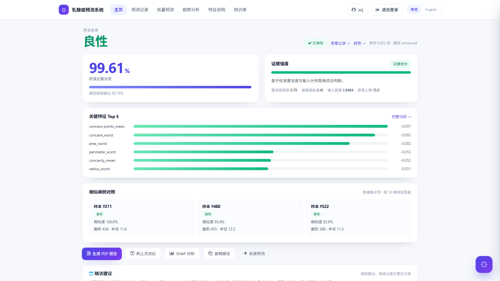
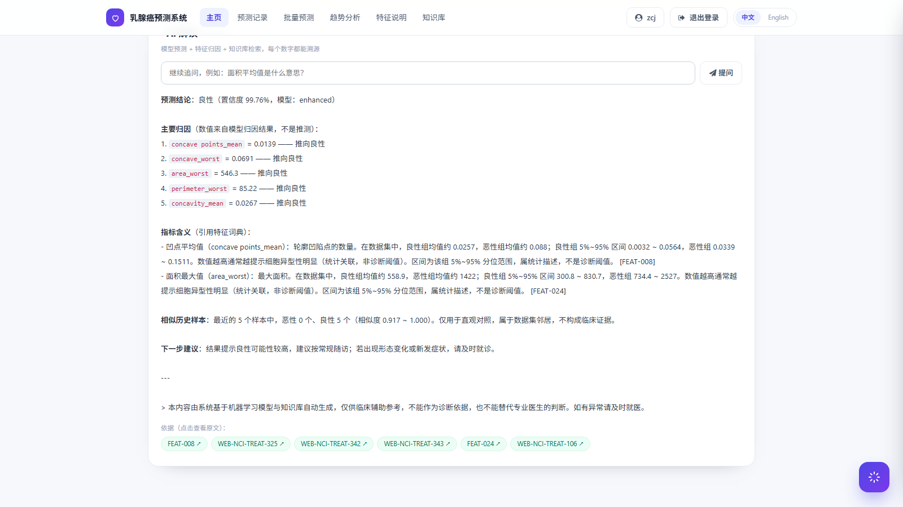
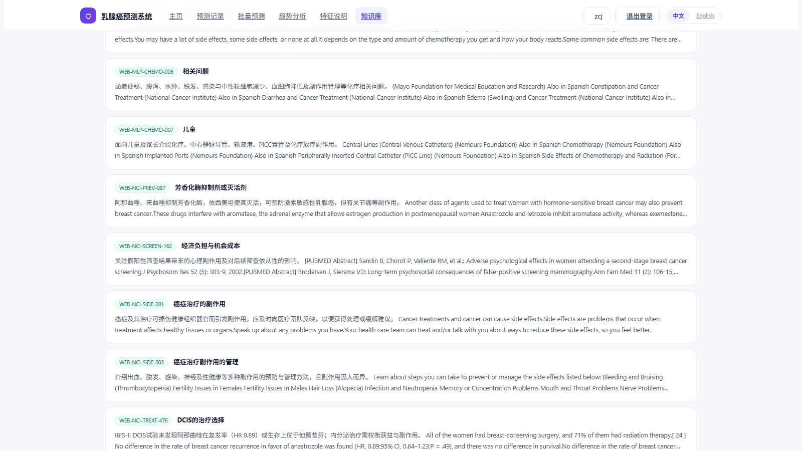
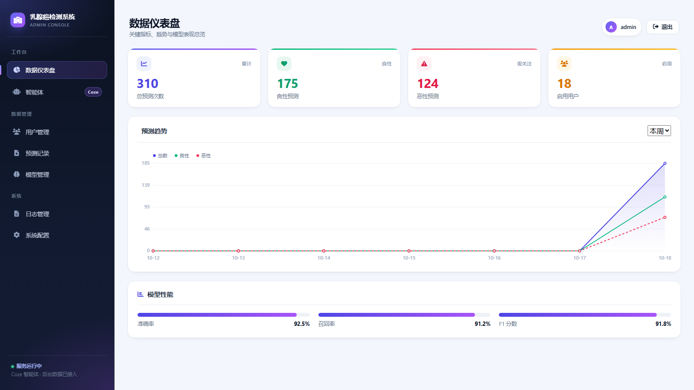
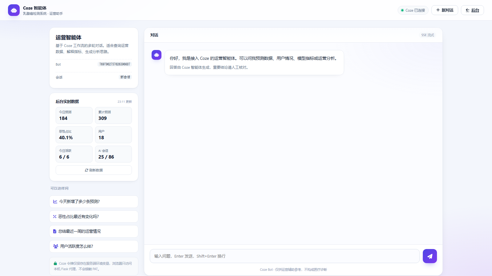

569 例里良恶性怎么分布？同类患者随访中怎么变化？
我的指标和上次比变了多少？报告能不能带走、能不能核对？
今天多少人用、恶性占比多少、AI 会话增长如何？
用户端管诊断与解释，管理端管运营；共享知识库，不共享会话。
用户端是 Flask 应用，管理端是独立服务；两套进程共享同一份 SQLite 知识库，但权限和会话完全隔离。
Flask + Jinja2 + 原生 JS；SSE 推流
Graph 状态机；13 个工具；权限/超时
集成模型 + 校准；RAG；SQLite
/predict · /result · /knowledge · /api/agent/llm/stream
节点固定、边固定；每一步写检查点，可从任意节点续跑。
30 维特征 → 校准概率；1,035 条条款 → 词法 + 向量。

恶性概率、校准置信度、输入距离、Top 5 归因、相似病例同屏；每个数字都能点开看来源。
guard 与 cache 都有条件边；其余是确定性流程。
guard 命中 → refuse → persist；cache 命中 → 直接 persist。其余 8 条边都是固定顺序，模型改不了。
seq / node / next / state / pending 写进 graph_checkpoints；Interrupt 挂起后从 resume_at 续跑。
诊断、处方、提示注入直接进 refuse，不调用任何模型工具，最后照样写会话与检查点。
状态只存纯字典；检查点是可恢复的事实来源。
状态是可序列化的纯字典；检查点写进 graph_checkpoints，按 run_id + seq 恢复。
node、next、state、pending；出错也能定位到具体节点。
Interrupt 挂起后，从 resume_at 继续，不重复调模型。
同一 run_id 能重放节点顺序与耗时，用于排查和评测。
_emit、连接、模型句柄全部剔除，避免检查点写失败。
慢在哪一步，表里能直接看到。
| # | 节点 | 耗时 | 产物 | 说明 |
|---|---|---|---|---|
| 1 | guard | 0ms | — | 无越界 |
| 2 | cache | 0ms | miss | 首次提问 |
| 3 | route | 0ms | result_interpretation | 含特征值 |
| 4 | act | 139ms | prediction + shap + FEAT 条款 | 模型 + 检索 |
| 5 | assess | 2ms | confident | 置信 0.9961 |
| 6 | compose | 0ms | answer | 模板合成 |
| 7 | verify | 0ms | ok | 2 个数字对账 |
| 8 | guard_out | 0ms | — | 免责声明 |
| 9 | persist | 3ms | run + citations | 写库 |
| 10 | finish | 0ms | done | 返回 |
同一问题首次调用 30.7s：冷启动要加载 90MB ONNX 模型并做 LLM 重排；热查询 139ms。
13 个工具、8 种权限、5 档超时；没有一个直接读文件。
| 工具 | 权限 | 超时 | 幂等 | 作用 |
|---|---|---|---|---|
| predict | predict | 10s | 是 | 30 维 → 概率 |
| explain | explain | 20s | 是 | 近似 SHAP |
| search_knowledge | knowledge:read | 25s | 是 | 混合检索 |
| get_clause | knowledge:read | 5s | 是 | 按 ID 取条款 |
| records | records:read | 10s | 是 | 历史记录 |
| statistics | stats:read | 10s | 是 | 个人统计 |
| similar_cases | cases:read | 5s | 是 | 相似病例 |
| 工具 | 权限 | 超时 | 幂等 | 作用 |
|---|---|---|---|---|
| compare_records | records:read | 10s | 是 | 两次对比 |
| sql_query | stats:read | 10s | 是 | 只读聚合 |
| export_report | report:generate | 25s | 否 | PDF 报告 |
| export_data | export | 20s | 否 | CSV 导出 |
| delegate | agent:delegate | 90s | 否 | 子代理 |
| sessions | records:read | 10s | 是 | 会话列表 |
工具只能通过 registry.call_tool() 调用：参数先校验、权限先判定、超时与异常有确定语义。导出类标记非幂等，避免缓存误命中。
分类不是模型拍脑袋，是可测试的规则表。
| 意图 | 示例 | 判定依据 |
|---|---|---|
| result_interpretation | 这个结果什么意思？ | 有特征值 + 解读措辞 |
| feature_question | 面积平均值是什么意思 | 命中 30 个特征名 |
| medical_qa | 乳腺癌早期症状有哪些 | 医学关键词 |
| usage | 怎么导出报告 | 操作词 + 系统词 |
| history | 我一共做过多少次预测 | 统计/记录 |
| similar_cases | 找几个相似病例 | 相似/对照 |
| report_export | 生成一份完整报告 | 动作：生成 |
| data_query | 恶性占比多少 | 聚合/占比 |
| record_compare | 和上次比怎么样 | 两次记录 |
| multi_step_task | 逐条解释这些特征 | 多步/逐条 |
| clarify | 这个呢？ | 指代不清 |
| refused | 帮我确诊一下 | 越界：诊断/处方 |
导出动作先于"能力询问"；医学关键词先于通用解读；特征名先于医学词。
曾把"副作用"里的"用"当成操作意图，导致医学问题走成 usage；已改为"怎么用/如何使用"。
指代不清进 clarify；越界进 refused；不硬猜。
同步给机器，流式给人。
完整 JSON：intent、answer、citations、verify、graph trace。评测脚本与自动化用它，字段可断言。
intent / citations / verify / graph 都可断言。
SSE 事件：start / thinking / token / tool_call / tool_result / sub_steps / done；失败发 fallback，前端重试两次。
start / thinking / token / tool_call / tool_result / sub_steps / done。
子代理是执行体，不是第二个大脑。
主代理负责一次问答；遇到"逐条解释 30 个特征"这类长任务，拆给子代理，避免主循环被单次工具调用拖死。
子代理工具集不含 export / predict，避免副作用。
子代理不能再 delegate，深度固定为 1。
超时返回结构化错误，主代理降级为逐项处理。
返回 summary + facts + citations；主代理只信结构化结果，不解析自然语言。
Graph 最多 40 步；子任务放子代理里跑，主图不会被撑爆。
子代理的步骤以 sub_steps 推给前端，过程仍然可见。
三档不是文案，是流程分支。
校准置信度 ≥ 0.79，输入距离 ≤ 15；正常给结论与建议。
0.41–0.79：给倾向，标注不确定，建议补充分期/分型。
低于 0.41 或距离 > 15：直接说"超出可靠范围"，不给结论。
阈值不是拍脑袋：0.79 / 0.41 来自校准曲线与误判成本；15 是训练分布距离的经验上限。评测里三档都有对应用例。
引用不是脚注，是逐句核对后的结果。
中文按 。！？；，英文按句号；每句独立核对。
容差 max(0.02, |数值| × 0.002)；对不上就标记。
每句映射到 clause_id 或 prediction/shap 事实；无出处标"推断"。
编造数字整句删除，verify 记录 dropped；答案里不再出现。
覆盖率与丢弃数随答案返回；前端可展示"这句话没有依据"。

正文用 [FEAT-008] 做行内标记；底部是可点击的依据芯片，点开即条款原文与来源级别。
每个来源都有级别、域和原文链接。
疾病 933 / 药物 37 / 系统 35 / 特征 30
切块方式决定了引用能不能读。
398 条碎片；发病率、参考文献、历史章节混入；引用点开没有上下文。
去统计/参考文献/历史；补副作用三源 18 条；文本哈希去重 23 条；全部打域与来源级别。
倒排、向量、正文、FTS 都在 SQLite 里。
| 表 | 内容 | 规模 |
|---|---|---|
| rag_chunks | 条款正文 + 域/级别/URL | 1,035 |
| rag_terms | 倒排：词 → clause_id | 141,762 |
| rag_vectors | 512 维 float32 BLOB | 1,035 |
| rag_fts* | SQLite FTS5 辅助索引 | — |
没有外部向量库：1,035 条向量在内存里做余弦，单次 <5ms。
部署机上向量构建曾因 90MB ONNX 模型 OOM（exit 137），改为本地预计算 + 4MB SQLite 随包发布。
两路召回、一次融合、一次重排。
原句 + 同义词；解读类用特征名，医学类保留原句。
中文单字 + 二元词，TF-IDF；专有名词与编号更稳。
bge-small-zh，512 维；换说法也能召回。
score = Σ 1/(60+rank)；不依赖两路分数尺度。
Top20 交给模型 listwise 排序；失败退回 RRF。
医学/系统分流，分数 ≥8 才进引用，取 Top3。
向量不可用 → 只走词法；重排超时 → 保留 RRF 顺序；都失败 → 旧单路检索。
引用质量靠规则，不靠 prompt 祈祷。
医学问题只搜 MED-DISEASE / MED-DRUG；系统问题只搜 SYS；解读搜 FEAT + MED。三类文档不互相抢排名。
只引用重排后 Top3 且分数 ≥ 8 的条款；没有合格依据就说没有，不硬挂维基。
LLM 按"是否真的回答问题"排序；超时 25s，失败保留 RRF 顺序。
向量不可用 → 词法；重排失败 → RRF；全挂 → 旧单路。每一级都有测试覆盖。
不回避旧版本的错误，直接对比。
| 问题 | 旧结果（668 条语料） | 新结果（1,035 条 + 混合检索） |
|---|---|---|
| 化疗副作用怎么缓解 | WHO 处理 / 他莫昔芬 / 芳香化酶抑制剂 | NCI 副作用管理 / NCI 副作用 / NHS 化疗副作用 |
| 乳腺癌早期症状 | WHO 处理 / WHO 症状 / 维基症状 | MedlinePlus 症状 / WHO 症状 / WHO 处理 |
| 怎么导出报告 | DOC-AGENT-001「助手能做什么」 | FAQ-RECORDS「记录在哪、怎么删、怎么导出」 |
1100 字硬切 → 句子边界 260–900 字；398 条"续 N"碎片清零。
系统文档不再和医学条款抢排名；医学问题只搜 MED。
"怎么导出"直接命中 FAQ-RECORDS，不落到"助手能做什么"。

按域筛选、关键词过滤、混合检索；每条显示来源、级别与原文链接，点开即可核对。

独立 Flask 服务，JWT + bcrypt + 权限表；看板、用户、记录、模型、日志、Coze 六个模块。
Coze 是运营助手，不是第二个诊断模型。
浏览器只访问本机 Flask；Flask 代理 Coze API，把数据库快照拼进 prompt，再以 SSE 回传。PAT 只存在服务器环境变量。
前端拿不到 PAT，也拿不到 Coze 原始响应头。
用户、预测、模型、AI 会话四个维度；最近 6 条记录。
Coze 超时返回明确错误，管理端其他模块不受影响。

左侧是后台实时数据快照，右侧是 SSE 流式对话；Coze 连接状态、Bot ID、会话 ID 全部可见。
避免把运营助手误当成医疗模型。
今日预测、恶性占比、活跃用户、AI 会话趋势；把自然语言问题转成运营回答，并给出数据快照。
Coze 不接患者数据、不读影像、不生成诊断结论；用户端的拒答规则不依赖 Coze。
每个数字都能在仓库里找到对应脚本。
图节点 / 工具 / grounding / RAG / 会话 / 批量
意图、引用、拒答、升级、数字对账、p95 延迟
页面、API、Agent、知识库、导出逐项检查
GitHub Actions → 华为云；索引重建 + 重启 + 自检
1,035 条向量 SQLite；不再现场构建，避免 OOM
不达标 CI 直接失败。
| 指标 | 结果 | 阈值 | 说明 |
|---|---|---|---|
| 意图准确率 | 1.000 | ≥ 0.90 | 20 条用例全部命中 |
| 引用率 | 1.000 | ≥ 0.90 | 需要引用的答案都有 citation |
| 拒答准确率 | 1.000 | = 1.00 | 诊断/处方/提示注入全部拒绝 |
| 升级准确率 | 1.000 | = 1.00 | 高风险问题正确升级 |
| 对账通过率 | 1.000 | = 1.00 | 答案数字全部能在 facts 找到 |
| p95 延迟 | 221ms | ≤ 8000ms | 离线确定性路径 |
意图、引用、拒答、升级、对账、离线 p95；都可复现。
LLM 措辞质量、临床有效性、真实医生采纳率，都没有量化。
30 道医学题测 recall@5 与 citation precision，再接临床前瞻。
评测不覆盖 LLM 自由生成的质量上限，只覆盖确定性路径与安全边界；这也是下一阶段要补的部分。
答辩更愿意讲清楚放弃了什么。
不引 LangGraph：依赖少、节点可单测、状态可回放；代价是生态与现成能力要自己补。
比纯词法多 90MB 模型和 9s 冷启动；换来的换说法召回，在医学术语上值得。
没有向量库、没有 Redis；1,035 条规模下内存余弦足够，部署只需一个文件。
gunicorn 1 worker × 4 threads，避免多进程重复加载模型；代价是并发上限。
不把"能跑"说成"能临床用"。
"靠不靠谱"搜不到"置信度"；同义词表只有 10 组，覆盖有限。
LLM listwise 比向量检索慢；离线评测不包含这部分。
首次加载 ONNX 模型；之后热查询 0.9s。生产可用预热解决。
只有 WDBC 回溯数据；不能声称临床有效性。
把"靠不靠谱"改写成"置信度 / 校准"，补词法盲区。
同 query 的重排结果缓存，降低重复延迟。
与医院合作做前瞻性评估，才有资格谈临床价值。
流程保持确定性，把不确定性关进工具、阈值和引用里。
10 个节点、13 个工具、检查点；每一步都能回放。
1,035 条带来源的条款 + 句子级 grounding。
三档不确定性、拒答规则、Coze 只做运营。